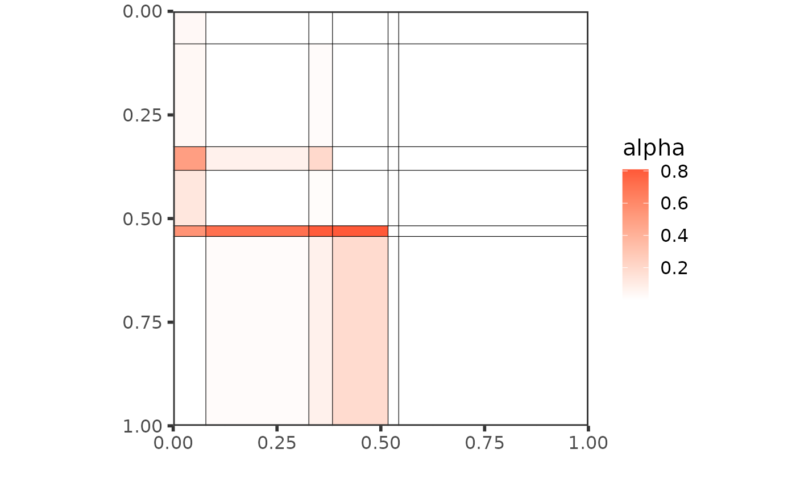
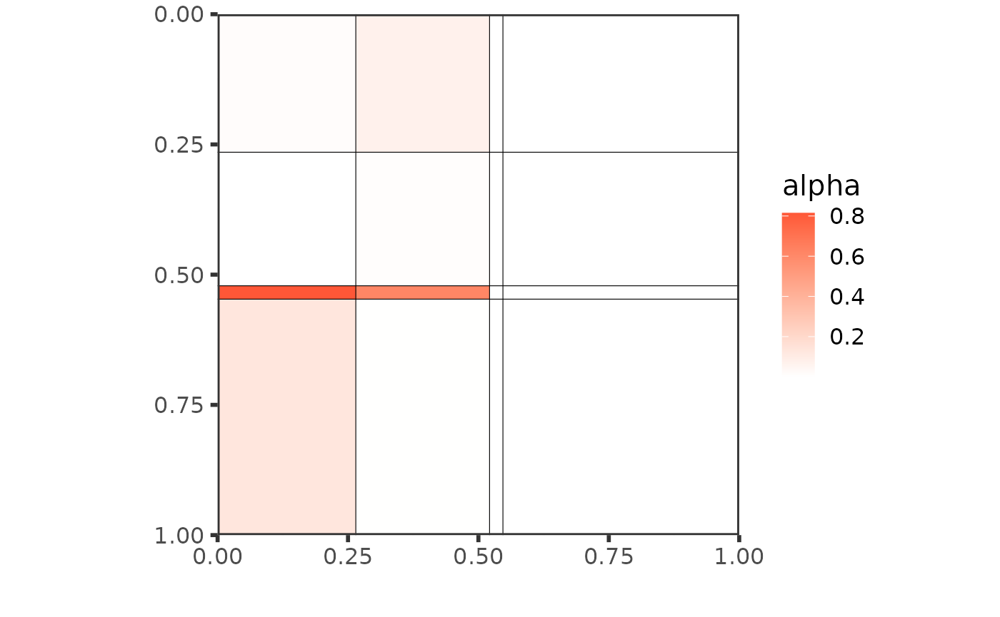

Tutorial on food webs
tutorial.RmdEstimation with colSBM
We load a list of 8 foodwebs. They are binary directed networks with different number of species. First, we are going to model jointly the first \(3\) networks, using the iid-colSBM model.
# global_opts = list(nb_cores = 1L,
# nb_models = 5L,
# nb_init = 10L,
# depth = 2L,
# verbosity = 1,
# spectral_init = FALSE,
# Q_max = 8L,
# plot_details = 1)
set.seed(1234)
res_fw_iid <- estimate_colSBM(netlist = foodwebs[1:3], # A list of networks
colsbm_model = "iid", # The name of the model
directed = TRUE, # Foodwebs are directed networks
net_id = names(foodwebs)[1:3], # Name of the networks
nb_run = 1L, # Nmber of runs of the algorithm
global_opts = list(verbosity = 0,
plot_detail = 0,
Q_max = 8) #Max number of clusters
)
#> Please install the progress-package in order to get a progress bar.
We can look at how the variational bound and the model selection criteria evolve with the number of clusters. Here, the BICL criterion selects Q = 6 blocks.
plot(res_fw_iid)
best_fit <- res_fw_iid$best_fitResults and analysis
Here are some useful fields to analyze the results.
best_fit
#> Fitted Collection of Simple SBM -- bernoulli variant for 3 networks
#> =====================================================================
#> Dimension = ( 105 58 71 ) - ( 6 ) blocks.
#> BICL = -1891.194 -- #Empty blocks : 0
#> =====================================================================
#> * Useful fields
#> $model, $nb_nodes, $nb_clusters, $support, $Z
#> $memberships, $parameters, $BICL, $vbound, $pred_dyadsWe can get:
- the estimation of the model parameters
best_fit$parameters
#> $alpha
#> [,1] [,2] [,3] [,4] [,5]
#> [1,] 1.177066e-01 2.319504e-09 4.966808e-02 5.956519e-10 5.177928e-03
#> [2,] 8.180531e-01 2.916666e-08 7.078981e-01 8.646223e-10 7.832613e-01
#> [3,] 1.005702e-02 1.101402e-10 1.924929e-04 5.733420e-12 4.142494e-05
#> [4,] 7.382175e-02 1.442146e-09 8.821942e-03 7.954465e-11 1.731919e-01
#> [5,] 8.775965e-03 3.406594e-10 9.177182e-04 1.368194e-10 8.265633e-07
#> [6,] 1.683914e-05 1.024691e-10 7.797809e-06 5.635873e-12 4.255687e-09
#> [,6]
#> [1,] 0.386674125
#> [2,] 0.532683794
#> [3,] 0.019487618
#> [4,] 0.002196643
#> [5,] 0.083575614
#> [6,] 0.032984541
#>
#> $pi
#> $pi[[1]]
#> [1] 0.08898380 0.02564103 0.18892024 0.45470474 0.15414568 0.08760451
#>
#> $pi[[2]]
#> [1] 0.08898380 0.02564103 0.18892024 0.45470474 0.15414568 0.08760451
#>
#> $pi[[3]]
#> [1] 0.08898380 0.02564103 0.18892024 0.45470474 0.15414568 0.08760451
#>
#>
#> $delta
#> [1] 1 1 1- The block memberships:
best_fit$Z
#> [[1]]
#> [1] 2 2 1 4 4 4 4 4 4 4 4 4 4 4 4 4 4 4 4 4 4 4 4 4 4 4 4 4 4 4 4 4 4 4 4 4 4
#> [38] 4 4 4 4 4 4 4 4 4 4 4 6 1 3 6 5 5 3 5 6 1 5 1 3 3 5 5 5 1 3 1 5 3 5 3 6 3
#> [75] 1 3 5 5 1 1 3 3 6 3 3 3 3 5 5 3 3 5 5 5 5 5 3 1 3 3 6 6 3 6 3
#>
#> [[2]]
#> [1] 2 4 2 4 4 4 4 4 4 4 4 4 4 4 4 4 4 4 4 4 4 4 4 4 4 4 4 4 1 5 6 6 3 3 5 5 3 1
#> [39] 3 1 5 5 1 5 5 6 3 3 5 5 6 3 3 6 3 5 5 6
#>
#> [[3]]
#> [1] 2 2 4 4 4 4 4 4 4 4 4 4 4 4 4 4 4 4 4 4 4 4 4 4 4 4 4 4 4 4 4 4 4 4 4 4 4 4
#> [39] 1 6 5 3 5 3 5 3 3 3 3 6 5 5 3 6 5 1 1 3 3 5 3 5 3 5 3 3 3 3 3 6 6- The prediction for each dyads in the networks, here for network number 3. If your goal is dyad prediction, then you should use
model = "delta", instead ofmodel = "iid".
best_fit$pred_dyads[[3]][1:10, 1:5]
#> [,1] [,2] [,3] [,4] [,5]
#> [1,] 0.000000e+00 3.200856e-08 0.023062008 1.911173e-06 9.890801e-09
#> [2,] 3.200856e-08 0.000000e+00 0.023062008 1.911173e-06 9.890801e-09
#> [3,] 1.708061e-09 1.708061e-09 0.000000000 1.724857e-07 9.105620e-10
#> [4,] 1.700181e-09 1.700181e-09 0.001588078 0.000000e+00 8.956540e-10
#> [5,] 1.700178e-09 1.700178e-09 0.001588076 1.719226e-07 0.000000e+00
#> [6,] 1.700178e-09 1.700178e-09 0.001588076 1.719226e-07 8.956513e-10
#> [7,] 1.700178e-09 1.700178e-09 0.001588076 1.719226e-07 8.956513e-10
#> [8,] 1.680387e-09 1.680387e-09 0.001570470 1.700383e-07 8.857174e-10
#> [9,] 1.700178e-09 1.700178e-09 0.001588076 1.719226e-07 8.956513e-10
#> [10,] 1.700178e-09 1.700178e-09 0.001588076 1.719226e-07 8.956519e-10We can also plot the networks individually:
plot(res_fw_iid$best_fit, type = "block", net_id = 1) +
plot(res_fw_iid$best_fit, type = "block", net_id = 2) +
plot(res_fw_iid$best_fit, type = "block", net_id = 3) 
Or make different plots to exhibit the mesoscale structure:
plot(res_fw_iid$best_fit, type = "graphon")
plot(res_fw_iid$best_fit, type = "meso", mixture = TRUE)
#> New names:
#> • `` -> `...1`
#> • `` -> `...2`
#> • `` -> `...3`
Clustering of networks
Let simulate some directed networks with a lower triangular structure that looks alike foodwebs.
set.seed(1234)
alpha <- matrix(c(.05, .01, .01, .01,
.3, .05, .01, .01,
.5, .4, .05, .01,
.1, .8, .1, .05), 4, 4, byrow = TRUE)
pi <- c(.1, .2, .6, .1)
sim_net <-
replicate(3,
{X <-
sbm::sampleSimpleSBM(100, blockProp = pi, connectParam = list(mean = alpha),
directed = TRUE)
X$rNetwork
X$networkData}, simplify = FALSE)
set.seed(1234)
net_clust <- clusterize_networks(netlist = c(foodwebs[1:3], sim_net), # A list of networks
colsbm_model = "iid", # The name of the model
directed = TRUE, # Foodwebs are directed networks
net_id = c(names(foodwebs)[1:3], "sim1", "sim2", "sim3"), # Name of the networks
nb_run = 1L, # Nmber of runs of the algorithm
global_opts = list(verbosity = 0,
plot_details = 0,
Q_max = 9) #Max number of clusters
)
#> Please install the progress-package in order to get a progress bar.
#> Please install the progress-package in order to get a progress bar.
#> Please install the progress-package in order to get a progress bar.
#> Please install the progress-package in order to get a progress bar.
#> Please install the progress-package in order to get a progress bar.
#> Please install the progress-package in order to get a progress bar.
#> Please install the progress-package in order to get a progress bar.We obtain a list of 3 models. The first one is for the full collection, and the second and third one are for the 3 foodwebs and the three collected networks. Here is a plot of the mesoscale structure obtained from the group of simulated networks. We can extract the best partition:
best_partition <- extract_best_partition(net_clust)The plot of the mesoscale structure of the whole collection is the following:

but then we can compare the mesoscale structures of the 2 groups:
plot(best_partition[[1]], type = "graphon",
ord = order(best_partition[[1]]$alpha %*% best_partition[[1]]$pi[[1]])) +
plot(best_partition[[2]], type = "graphon",
ord = order(best_partition[[2]]$alpha %*% best_partition[[2]]$pi[[1]])) +
plot_layout(guides = "collect") + plot_annotation(tag_levels = "1")